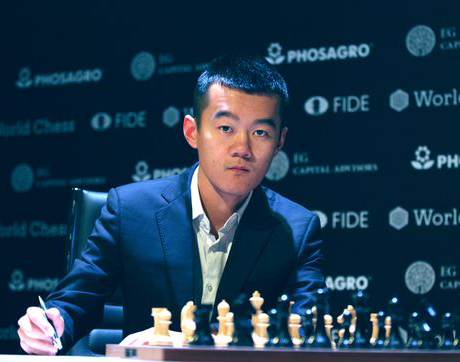

Ding Liren

Država:Kina 
Ime i prezime:Ding Liren
Rođenje: 24. listopada 1992.
Sex: M
Titula: velemajstor
Najviši rejting:2816
Općenito
Ding Liren je kineski šahovski velemajstor s najvećim elo-om od bilo kojeg igrača iz Kine ikada.
Kinesko šahovsko prvenstvo je osvojio tri puta i onda je se prestao u njemu natjecati, dostigao je finale
Svjetskog prvenstva 2017. i 2019. godine, ali je oba puta izgubio od Magnusa Carlsena. Prvi je ikada kineski
igrač da igrao u Candidates turniru. Bio je nepobjeđen od 2017. do 2018. s rekordnim 29 pobjeda i 71 izjednačenih
partija, u 2019. godini Magnus pobjeđuje ovaj rekord.
Edukacija
Liren je pohađao Chant Garden osnovnu školu koja je poznata u Kini kao jedna od najprestižnijih
privatnih osnovnih školi u Kini.
Karijera
Liren je pobjedio Kinesko prvenstvo 2009., 2011. i 2012. godine, predstavlja Kinu sva četiri puta
na Šahovskoj Olimpijadi od 2012. do 2018. godine, zlato osvaja 2014. i 2018. U kolovozu 2015 godine je
bio najbolji igrač brzog šaha u svijetu s elo-om 2875. U 2017. godini je prvi puta igrao u Candidates turniru
gdje je završio na četvrtom mjestu s jednom pobjedom i trinaest izjednačenih partija, bio je jedini natjecatelj
u cijelom turniru bez ijednog poraza. Postao je prvak u 2019 Grand Chess Tour turniru pobjedivši Maxime
Vachier-Lagrave-a.